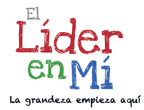

>
>
Una nueva forma de definir el liderazgo Mucha gente equipara el liderazgo con una posición formal de autoridad. Pero creemos que cualquiera puede ser un líder al llevar intencionalmente su propia vida (liderar a uno mismo) y trabajar bien y alentar la grandeza en los demás, ya sean familiares, amigos, vecinos o colegas (liderando a otros).
Mejorar los enfoques educativos aplicando el aprendizaje socioemocional. El plan de estudios SEL de Leader in Me se centra en la capacidad de liderazgo personal e interpersonal de los estudiantes, el personal y las familias. Un mayor enfoque en los programas de SEL en la escuela ayuda a los estudiantes a comprender las complejidades que enfrenta el mundo interconectado globalmente. A medida que los maestros implementan el plan de estudios SEL respaldado por CASEL de Leader in Me, estos programas ayudarán a los estudiantes a desarrollar competencias en autoconciencia, autogestión, conciencia social, habilidades para relacionarse y toma de decisiones responsable. Estas estrategias socioemocionales tendrán un impacto más directo en la forma en que “las personas adquieren y aplican el conocimiento, las actitudes y las habilidades para: Comprender y gestionar las emociones. Establecer y lograr metas positivas Siente y muestra empatía por los demás. Establecer y mantener relaciones positivas. Si bien los enfoques educativos modernos de hoy se centran en gran medida en el rendimiento académico, la mayoría pierde el componente crucial de aprendizaje socioemocional. Solo el 48% de los estudiantes de secundaria encuestados sienten que lo que aprenden en clase les ayuda fuera de la escuela. El aprendizaje socioemocional cierra esa brecha, ayudando a los estudiantes a desarrollar otras habilidades para la vida que necesitan para superar los desafíos de nuestra creciente fuerza laboral interconectada. La combinación de la educación formal con el programa SEL de Leader in Me proporcionará a los estudiantes un plan de estudios de aprendizaje centrado en el desarrollo de habilidades emocionales como parte integral de las prácticas de educación formal. Inscriba a su estudiante en un programa SEL como Leader in Me para brindarle la capacitación y el conocimiento necesarios para desarrollar plenamente las habilidades sociales y emocionales en todas las áreas de la vida. Las escuelas y los líderes educativos pueden inscribirse hoy en Leader in Me inscribiéndose en línea. Una vez inscrito en LiM, obtendrá acceso inmediato a toda nuestra biblioteca de herramientas y recursos, incluido nuestro plan de estudios SEL. Trabajando junto con nuestros especialistas de SEL, puede determinar cómo puede implementar mejor Leader in Me en su salón de clases. Obtenga más información sobre el aprendizaje socioemocional.